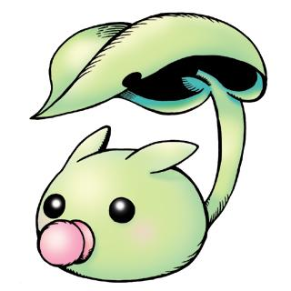

绿叶兽 リーフモン Leafmon

基本资料
| 等级 | 幼年期Ⅰ |
|---|---|
| 类型 | 软泥型 |
| 属性 | |
| 所属 | |
| 适应领域 | |
| 首次登场 | 2000年6月 D-3 V仔兽版 |
| 名字来源 | 英语【Leaf】叶子 |
必杀技＆得意技
| 酸性泡泡 | San no Awa | 酸の泡 |
设定资料
尾部有新绿气息（小叶子）的软泥型数码兽。拥有很多植物要素，体内成分含有叶绿素，通过光合作用成长。拥有叶子状的尾巴，在阳光猛烈或下雨的时候，用这片叶子遮挡。纯真无邪的性格，不会让对方害怕或怀疑。不过有一点害羞。刚出生还不会战斗，但这充满生命力、天真无邪的心让人想起了快要忘却的纯粹感情，用平静的空气包容周围的人。不过要是挑逗过分，他会吐出酸性泡泡威吓一下。
尻尾部に新緑の息吹（小さな葉っぱ）を持ったスライム型デジモン。植物の要素を多く持ち体成分には葉緑素を含んでいて、光合成をして成長している。葉っぱ状の尻尾を持ち日差しが強いときや、雨の時はその葉っぱでしのいでいる。純真無垢な性格で相手が怖いとか、疑うことなどはしない。しかし、ちょっぴり恥ずかしがり屋だ。生まれたてで戦うことは出来ないが、生命力あふれる初々しい心は忘れかけていた純粋な気持ちを思い出させ、周りの人々を穏やかな空気で包み込む。しかし、ちょっかいを出しすぎると、酸性の泡を吐いて威嚇してくるぞ。